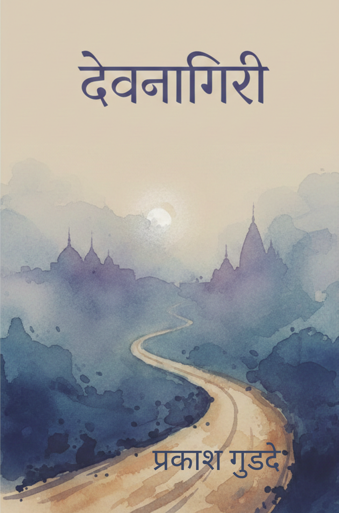

यह सिर्फ एक कहानी नहीं, यह यादों और एहसासों का सफ़र है।
"देवनागरी" प्रेम, पहचान और जीवन के उन पलों की कहानी है जो हमारे दिल में हमेशा रहते हैं। यह कहानी आपको आपके अपने एहसासों से जोड़ देगी, और शब्दों में जीने का अहसास कराएगी।
आपका छोटा सहयोग भी अगली कहानी की चाय और शब्दों को आगे बढ़ा सकता है।
UPI से सहयोग करें